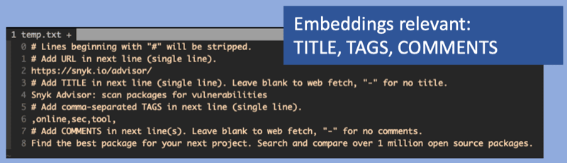
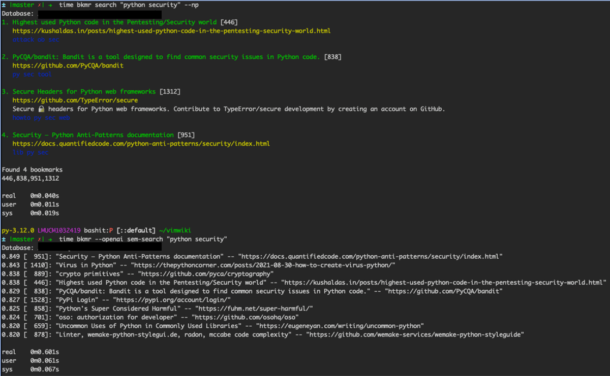

Elevating Bookmark Management with AI-Driven Semantic Search
Search has been revolutionized by AI, bringing ‘Google-level’ quality within the reach of everybody.
Introduction
Finding information is one of the most important capabilities for any professional.
bkmr introduced a CLI Bookmark Manager leveraging SQLite’s full-text search (FTS) capabilities, offering improved search efficiency. This tool, developed in Rust, aimed to provide snappy bookmark manager capabilities for the command line.
However, the landscape of search has changed radically. Traditional keyword-based searches, while effective, fall short in understanding the context and semantics behind user queries. Semantic Search, once the realm of companies like Google, is now available for everyone.
The new search experience is not just about finding keywords but about understanding the essence of the content.
Semantic Search
Conceptual Overview
Key technology for semantic search is language model embeddings. Embeddings, like those from OpenAI, convert text into high-dimensional vectors, capturing the semantic essence beyond mere words.
AI embeddings integration allows bkmr to interpret search queries with greater relevance, mimicking human language comprehension and improving user search experience.
Challenges
Embedding computations are very compute-intensive, which would impact performance of an CLI application. Not everyone has got GPU access on his local setup.
Self-hosted models like many from Hugging Face, while offering control and customization, may introduce latency, negatively affecting responsiveness.
Opting for a closed-source solution like OpenAI introduces external API dependencies and necessitates an OpenAPI key, adding some configuration complexity.
Despite this, it’s crucial to maintain the application’s excellent performance, balancing advanced search capabilities with the tool’s efficiency and user experience. Therefore bkmr opted for OpenAI rather then self-hosting a model.
Project Evolution
Objectives Revisited
- Extend bkmr with semantic search capabilities
- Enhance search efficiency and quality
- Explore applicability of AI in a tool used daily, while maintaining the tool’s inherent performance and responsiveness.
Implementation
Strategy Pattern for Model Integration: Adopted a strategy pattern to allow flexibility in integrating various models, facilitating potential future expansions beyond the current AI model.
Database Schema Migration: Extended the database to include embeddings, essential for storing and retrieving the AI-processed data efficiently.
Content Hashing: Implemented content hashing to minimize redundant API calls. This approach helps in identifying already processed content, reducing unnecessary computational load.
Transparent User Experience: Ensured that all embedding-related operations are executed transparently, maintaining the user experience without exposing the complexities of the underlying AI processes.
Batch Processing and Embedding Backfill: Incorporated batch processing for handling existing datasets efficiently. Implemented an embedding backfill mechanism to update existing or new bookmarks with semantic data, e.g. unavailability of OpenAPI API.
Embedding Input: The semantic quality of the embeddings vector is determined by the text fed in. Since bookmarks inherently lack a lot of context the actual value of semantic search for URLs might be limited as long as there is no additional context being added.
The URL title (TITLE), tags (TAGS) and description (COMMENTS) fields have been chosen as embedding input. The URL itself has been excluded deliberately, since it often contain information which is not conducive for language embeddings, e.g. uuids.

Results and Reflections
Performance Analysis
Now how is the quality of semantic search results versus FTS?

Semantic search will find related URLs which would not be matched by keywords or FTS.
However, the relevance of the results is depending on the context which has been given to the language model. The more context provided the better the result. Since naked URLs do not carry a lot of semantic meaning, any language model will struggle. But as soon as the data is being enriched by tags or further comments, the search results improve rapidly.
As expected latency increases due to reaching out to OpenAI in order to embed the search query. After that a full similarity scan of the database is surprisingly fast.
Overall the semantic search performance of 0.6s for a database with ca. 2000 URLs is dominated by the OpenAPI call.
Conclusion
The integration of AI-driven semantic search into bkmr proved to be straightforward, with all challenges being manageable. While the performance impact due to external API access is noticeable, it remains within acceptable limits.
The benefit of semantic search for this use-case is a mixed bag, primarily due to the very limited information typically associated with URLs.
However, the quality improves significantly with adding more context. It enhances the AI’s ability to understand and categorize bookmarks more effectively. The more context is given, the better the results become.
Also for this use-case semantic search does not replace traditional full-text search (FTS). But the additonal results often uncover new and unexpected findings from the bookmark database which FTS alone would have missed.
The rapid pace of innovation in AI and search technologies is both exciting and challenging to keep up with. As the field evolves, established solutions and approaches are quickly becoming outdated.
The Rust source code is here: bkmr.